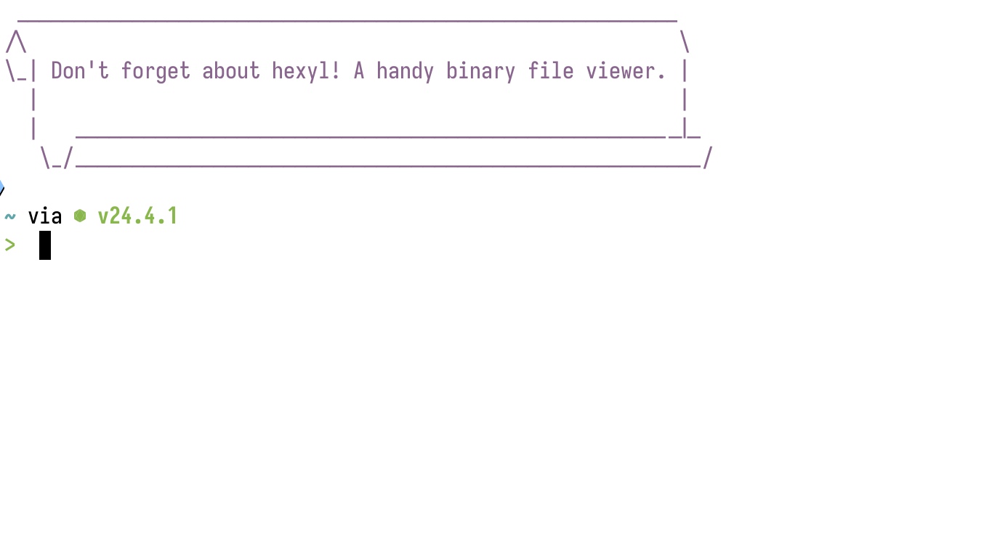
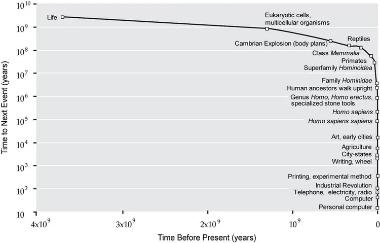

Zine#40
琐碎二三事
近 6 个月的订阅信息差不多 1300 多条，把感兴趣的都看了看，整理到 zine 里，没啥兴趣的就标记已读，总算是把订阅的信息都清空了。
面对一堆订阅信息，既想看完它，不错过有趣的信息，又觉得太多了，无从下手，无形中给自己产生了压力。
还好时间比较多，把每一个订阅都看了一遍，不感兴趣的订阅要么删了，要么标记为忽略，也新增了一些感兴趣的订阅。
感叹有的作者的产出真的高，一天至少一篇文章，多的时候可能四五篇。
但我是真看不过来，所以对于一些产出高的，我又不太感兴趣的，也是忽略掉了。
清空之后，就可以定期去整理订阅信息了，信息没那么多，也不至于产生焦虑。
一个建议是，当新增一个订阅的时候，最好马上看一遍，对于不感兴趣的就标记已读，避免信息堆积。
不然随着订阅增加，订阅信息就会越堆越多，给自己带来一些压力。
日常#6::订阅流整理 中的方法能很大程度缓解这个问题。
去医院拔了牙，牙齿蛀坏了只能拔了。
因为会打麻药，拔牙倒是不痛，只是拔牙的时候触觉还是有的，声音也能传到脑子里，看着医生用力的姿势，可想而知没有麻药得多痛。
拔牙之后需要过至少 3 个月才能去植牙，目的是长一些骨质，但也不是越久越好，因为骨质不会一直生长。
后续大概会去种植一下，不知道贵不贵，到时再分享。
拔完牙之后会用棉球塞住伤口，一小时后可以吐掉，两小时后可以进食，当天避免刷牙，漱口，吐口水等，让伤口先愈合。
刚开始拔完，拔掉的地方会有一些碎肉，但过了两三天，不知道是被口水分解了还是会自己收缩，拔掉的地方会变平。
可能是因为没开刀，拔完后也没觉得很痛，只是隐隐约约有点痛感。
吃东西还是不能吃太硬的，戳到伤口还是会有点痛。
因为不怎么痛，所以不影响说话，而在我前面拔牙的人，好像开了刀，拔完说话就有点听不清说啥了。
整体来说，这次拔牙没有受太多苦，恢复的话三四天就大差不差了，花费大概六七百，近一半也是走了医保。
隔壁有人装修，离得不远，电钻的声音实在让人受不了，尤其是白天睡觉的时候。
尝试过耳塞，但用处不大，不知道是不是没塞严实，而且塞在耳道里挺不舒服的。
还是降噪耳机好用，降噪效果不错，再播点音乐，基本上就听不见装修的声音了。
News | Article
Blaugust 2025 – Calendar & Weekly Prompts
Blaugust 提供了一些博客主题，方便没有思绪的作者选题。
如果写博客不知道写什么，也可以找找 博客嘉年华 ，尝试写写对应主题的内容。
Do One Thing
当陷入了焦虑，不知道该做什么，感觉被困住了，这个时候，不妨找一件事情做做，可以是散步、看书、睡觉休息、听一张专辑……
让自己专注在做一件事之中，暂时不管外界的干扰，做完一件，再尝试做下一件。
完成一件事情，会带来一些成就感或满足感，行动起来也会形成惯性，或许能给自己带来力量振作起来。
摘录
我有一份需要完成的任务清单，但一件也做不了。
说实话，那感觉糟糕透了。我仿佛被自己的大脑困住了。
然后我摆脱了它。
我告诉自己必须停下来，做一件事。
对我来说，那件事就是去散步。
芝加哥正经历着三月的一个美好惊喜，那天就像夏天一样。
我已经在地下室工作/发泄了几个小时，错过了这一切。
于是，我停下来，走出门外，开始散步。
你知道吗？这管用。
等我走完那段路 ⸺ 完成那件事后 ⸺ 我已经准备好做下一件事了。
世界并没有停止成为一场噩梦，但我暂时摆脱了厄运的魔爪。
我有一位老朋友，他加入戒酒互助会已经很久了。
多年来，每当我向他寻求如何应对各种令人焦虑的事情的建议时，他总是简单地回答：「一天一天来。」
这就是我目前看待事情的方式：一次只专注于一件事。
现在，专注似乎变得难以企及。
周围发生的事情太多太快。
然而，我们每个人都必须工作、学习、生活。
而专注于这些事情，难如登天。
我理解这种感受。
我也在与之抗争。
虽然我没有绝佳的建议，但我可以分享这一点：
做一件事。
我们正处于一个漫长而艰难的时期，而结束似乎遥遥无期。
当权者最希望看到的就是你们疲惫不堪、无力反抗，无法做成任何事情（尤其是那些会动摇他们权力的事情）。
所以，请做一件事。
它不必很大，只要有就行。
当这件事完成后，就继续做下一件事。
有些日子会比其他日子更容易（我得坦白，今天我在这方面做得一团糟，事实上这篇帖子就是我今天唯一做的事），但尽你所能去做。
做一件事。
这就是我们度过难关的方式：每个人先做好一件事，然后再做下一件事，直到每一件事都汇聚成大事。
No Matter What
作者小时候家人定了一条规则，就是每天晚上 6 点要一起吃晚饭。
规则听起来简单，但要遵守规则并不容易。
有时是需要放弃一些事情的，例如玩游戏正起劲，或那一天过得很糟糕，不管如何，都要 6 点一起吃饭。
摘录
这是一条简单的规则，几乎没有解释的余地。
然而，这并不容易：有时你必须放弃其他事情才能在六点吃上晚饭。
这时，这条规则才最重要！这才是成败的关键。
90% 的时间遵守规则比 100% 的时间遵守规则容易得多。
你必须做出牺牲。有时你必须说不。
这就是坚持规则所付出的代价。
是的，这样的规则「听起来」很蠢，但它蕴含着一个更深层次、近乎斯多葛主义的领悟：生活是复杂的，会给你设置障碍。
但如果你真的想取得进步，就必须找到一种方法。
如果其他方法都不奏效，那就制定一个愚蠢的规则；你挣扎得越厉害，规则就应该越具体。
晚餐。每天。六点。
直到现在我才发现这一点。
2019 年，我向我的朋友 Abu 提到，我因为不运动而感到内疚。
不是我没尝试，只是什么都坚持不了多久。
他建议我们每周二一起跑步 ⸺ 无论如何。
我觉得这很荒谬。
我告诉他这根本不可能奏效。
为什么偏偏是周二呢？！感觉太随意了。
我心里开始讨价还价。但与非理性谈判毫无意义。
五年过去了，我仍然每周二跑步。
我其实不擅长跑步。我的速度不快。
距离不远，但这是一次扎实的努力。时间被创造出来了。它奏效了。
简单而具体的规则，会更容易遵守，不管如何都去遵守它，或许就能客服一些困难，获得一些进展。
我也尝试实践一下。
Watching Millionaires
作者一个有趣的发现：欧冠足球赛，球员和经理都是百万富翁，当我们在看球赛，也是在看一群百万富翁的比赛。
再仔细观察，会发现其实平时关注的明星、企业家、歌手等人，也是很富有的人。
有人喜欢关注这些「名人」的八卦，乐此不疲，过于关心别人的生活，对自己和身边人的关心反而少了。
与其活在别人的生活中，不如多关心自己的生活，不要一直旁观别人的生活。
摘录
前几天我看了欧冠决赛，突然想到：我基本上一直在看百万富翁。
球员是百万富翁，教练是百万富翁，俱乐部老板是百万富翁。
这太不真实了。
[…]
昨天我听说 特朗普（Trump）和 马斯克（Musk）在吵架。
他们不是百万富翁，他们是亿万富翁！
[…]
我不知道该怎么看待这件事。这是一种奇怪的领悟，但感觉值得分享。
我可以探讨这种对精英的痴迷如何分散我们对身边人的关注，但这并非我的本意。
我更感兴趣的是，这种现象是如何变得如此普遍的。
也许这只是幂律法则在起作用：少数人脱颖而出，我们通过关注他们来放大他们的影响力。
但每个领域的大多数人并非百万富翁。
我们只是看不到他们。
你正在阅读一个普通人的小博客，如果你能读到这里，我很感谢你。
看来你也很关心那些小故事。
如果你和我一样，你不仅喜欢那些小故事，你还在积极寻找它们 ⸺ 但如今这样的故事太少了。
是的，仍然有一些地方人们分享他们的故事，但你需要知道去哪里寻找。
如果说有什么是我们都应该更多分享的，那就是：写下那些小事，那些日常瞬间，那些你遇到的人，那些你关心的事情。
不要活在别人的生活中！
[…]
我们不必一直旁观别人的生活。
活出自我。
其他
- Airing 2024 年的回顾：2024，告别盛夏。
- 作者回家吃到了蜂蜜，回想起了小时候的 童趣。
- 多做一些「没用的」事情，或许会在你想不到的地方影响到其他人。
- 如果买房比租房便宜，为什么要去租房呢？一台便宜的电脑就能完成的事情，为什么要租一个服务器呢？有时 Renting is for Suckers。
- A good luck charm 并不能真的给你带来好运，但它或许会提醒你一段美好的时光。
- 作者分享了 My Favourite Ways to Avoid Spending Money，如果你也想省钱，或许可以参考一下。
- 科技巨头肆意收集和滥用用户数据，在社交平台对你进行实验，要把你困在里面，时时刻刻喂你满嘴广告，所以 Never Forget What They've Done。
- 一个读者的来信说，网站文章质量不错却不收钱，你图啥呀？字体怎么那么大，这设计的啥呀？作者答道： My website is my safe space ，在他的网站里，他想如何就如何，舒服而自在。爱看就看，不想看就别看。
- Tortoise Mode vs Hare Mode，乌龟模式慢工出细活，兔子模式效率高，两种模式是来回切换的。
- On Hearing in Color，作者似乎有视觉障碍，对他来说，颜色是靠「听」的而不是看的，他的世界虽不是五彩斑斓的油画，却也是跌宕起伏的交响乐。优美的散文。
Cool Bit
Celebrating 20 years of MDN
MDN 20 周年了，刚接触前端那会儿还不知道有 MDN，不懂的就百度，后面接触 MDN 后，web 规范相关的都会首先查 MDN。
没有蛋糕的生日庆祝算什么？
在网络世界里，蛋糕有着非常特殊的地位。
浏览器厂商之间长期存在互赠蛋糕庆祝重大里程碑的传统。
一块好蛋糕对于维系团队间的协作精神至关重要 ⸺ 这些团队时而竞争，但最终都在为构建人人共享的开放网络而努力。
原来还有在里程碑时赠送蛋糕的传统。
Could HTTP 402 be the Future of the Web?
网络爬虫随意爬取网页内容，就算通过 robots.txt 声明不允许爬取，爬虫可能也会忽略，尤其是当前 LLM 需要大量训练语料的时候。
Cloudflare 提出 返回 402 Payment Required ，让爬虫付费爬取。
爬虫想爬取 cloudflare 上的内容，首先需要在 cloudflare 上注册一个身份，这样就可以用于在 cloudflare 上针对爬虫收费。
然后:
- 爬虫爬取需要付费的内容时，cloudflare 返回 402，并包含对应的价格，爬虫需要再次请求，并回答是否愿意付费。
- 或者，爬虫在爬取的时候主动给一个价格，如果要爬取的内容低于这个价格，cloudflare 则放行其爬取。否则依然返回 402，让爬虫明确支付对应费用再放行。
不错的提案～
余日摇滚
一个分享歌曲的博客页面，有趣，喜欢。
Tutorial | Resource
vue bits
一些很酷的 vue 动画组件。
Art of README
关于如何写好 README 的建议。
Discovery feed
Bear 上的 feed trending，可以发掘自己感兴趣的内容。
Code Related
Using fortune to reinforce habits
{kind=link}

作者使用 fortune 输出提示语，提醒自己使用一些安装好的程序。
Getting decent error reports in Bash when you're using 'set -e'
如果平时用 bash 写脚本，可以设置 set -e 在脚本执行失败的地方终止脚本。
但是错误信息比较少，作者给了个技巧，可以打印错误的行和命令：
trap 'echo "Exit status $? at line $LINENO from: $BASH_COMMAND"' ERR
相关命令说明：
Responsive video is (almost) easy now
在网页内嵌视频的实现和优化。
A Friendly Introduction to SVG
一篇交互式文章，介绍 SVG，很不错的入门文章，对于了解 SVG 很有帮助。
其他
It’s time for modern CSS to kill the SPA
如今不少 SPA (Single Page Application) 的功能， CSS 也能够实现，作者提出或许下次开发网页，你可以不用 SPA。
- As a developer, my most important tools are a pen and a notebook，编写代码是最后必不可少的一步，我们通过它告诉计算机该做什么，但比编写代码更重要的是弄清楚要编写什么代码。
- Explaining it helps you learn it，如果你无法将一个事情用简单的话解释清楚，说明你并不理解它。学习的时候尝试向别人解释学到的东西，即使没解释明白，也有助于自己去理解。
- 作者整理了 The history of web application architecture，从早期的拨号，讲到现在的客户端渲染、服务端渲染的架构。更进一步，还有 Local-first web application architecture。
- 避免过度抽象，还不确定如何抽象的时候，Repeat Yourself 也没啥不好。
- The Gap Through Which We Praise the Machine，有人用 LLM 很爽，有人觉得 LLM 真垃圾，可能是各自的预期不同。用得好的人往往会花不少时间去调试，去适应 LLM；用得不好的人，可能期望 LLM 一上来就能将事情做好，不愿意折腾。然而目前 LLM 依然是需要花时间折腾一下才能做得更好。
-
就像手工裁缝和农场直运餐饮继续独立于快时尚和快餐的剥削世界运作一样，我不得不相信，对于我们这些仍然关心人和手艺的人来说，会有另一个地方——另一个市场。
Emacs
- Writing experience: My decade with Org 文章有很多作者关于 org-mode 的使用技巧。
- Writing experience: Emacs, you won
- My Emacs Org Configuration 作者的一些 org-mode 的配置。
i switched to emacs for notetaking (and i'm never going back) (6:08)
作者使用 org-roam 记笔记的演示。
- Org tutorials
- Planet Emacslife Emacs 用户博客文章合集。
-
很长的一篇文章，内容包括如何在 Emacs 中打开文件、排查打开文件慢的过程、 Emacs 的价值观、自由软件、 Emacs vs Vim vs NeoVim vs VSCode 、开源、改进 Emacs 的思考以及对于技术的思考。
摘录
2018 年，Bryan Cantrill 做了一场精彩的演讲，分享了他使用 Rust 编程语言的近期经验。
更深层次地，他探讨了软件中一个经常被忽视的方面：我们所用软件的价值观。
稍作转述，他的意思是：
价值观被定义为相对重要性的表达。
我们比较的两件事都可能是好的属性。
真正的问题是，当你必须在两者之间做出选择时，你会选择什么？
你做出的选择反映了你的核心价值观。
他接着将一些编程语言的核心价值观与我们对系统软件（如操作系统内核、文件系统、微处理器等）所要求的核心价值观进行了对比。
这是一场 非常好的演讲，你应该看看。
思考价值观很重要，因为它们是我们做出决策的核心。
在我看来，它 (指 NeoVim) 目前在以下方面也比 Emacs 更有优势：
- 开发流程：非邮件列表驱动的开发、广泛的自动化构建、公开的路线图、持续的资金支持、频繁的稳定自动化发布
- 用户界面：所有平台的用户界面相关代码都已从核心中移除，取而代之的是一个一致的 API（TUI 和 GUI 都使用它），这使得各种解耦的显示实现成为可能（用户界面实际上就是插件！）
- 开箱即用体验：更好的默认设置，内置 LSP 客户端
这些成果是少数拥有共同愿景和价值观的个体通过持续努力所带来的巨大变革的结晶。
至关重要的是，它包括积极改善软件的人文方面：筹集资金支持开发，降低贡献摩擦，为贡献者扫清障碍，协调和整合各项工作，以及记录流程。
换句话说，这是技术公司中非软件工程师所做的宝贵工作。
对我们而言，在开源领域，这些任务常常被忽视。
代码是构建软件中最简单的部分。
很难否认 Neovim 的成功得益于其注重可维护性和速度的平易近人的开发流程，而相比之下，可以说 Emacs 当前的进展是尽管有其开发流程而取得的。
例如，由于 Emacs 高度重视自由，向 Emacs 核心（或官方仓库中的包）贡献代码需要将版权转让给 FSF。
要将包整合到主仓库中，所有向该项目提交过代码的人都需要经过这个程序。
即使对于一个非常乐意、实际的 Emacs 核心维护者，对于一个几乎所有人都使用的、毫无争议的宝贵包，这个过程也可能需要数年。
这也使得一些人无法为 Emacs 做出贡献。
不难发现，那些已经并将继续为社区和生态系统做出巨大贡献的人们，也提出了批评。
归根结底是核心价值观。
我认为 Emacs 未来发展面临的最严峻问题之一是，我们正在缓慢但稳定地失去那些对 Emacs 内部机制了如指掌、拥有丰富修改经验的老手，而（受欢迎的）新人们大多更喜欢用 Lisp 编写应用层代码。
如果这种趋势持续下去，我们很快就会失去进行深度基础设施变更的能力，也就是说，将无法添加需要在 C 语言层面进行非平凡修改的新功能。
⸺ Eli Zaretskii 在 Re: [PATCH] Add prettify symbols to python-mode (2015)
一种语言需要庞大而广泛的社区。
一种语言需要很多人编写大量软件，这样当你需要某个特定工具或库时，
很有可能它已经被某个比你更懂这个主题、并且比你投入更多时间来完善它的人写好了。
一种语言需要大量的人报告错误，这样问题才能被快速识别和修复。
由于用户基数大得多，Go 编译器比它们松散基于的 Plan 9 C 编译器更加健壮和符合规范。
一种语言需要很多人将其用于许多不同的目的，
这样语言才不会过度适应某一种用例，并最终在技术格局变化时变得毫无用处。
一种语言需要很多人学习，这样才能形成一个市场，
让人们愿意著书立说、开设课程，或者像这次会议一样举办研讨会。
如果 Go 留在 Google，这一切都不会发生。
Go 会在 Google 内部，或者在任何一家公司或封闭环境中窒息。
从根本上说，Go 必须是开放的，Go 需要你。
没有你们所有人，没有全世界所有使用 Go 进行各种项目的开发者，Go 就无法成功。
⸺ Russ Cox 在 GopherCon 2015 主题演讲中
Emacs 的并行性并非直接，但很明显。
[…]
可以说，稳定性和渐进式演进是 Emacs 得以存活并持续繁荣的原因。
然而，稳定性必然与进步性背道而驰。
正是这种可能使其成功的特质，也拖慢了它的发展。
然而，它对进步性的影响远不如自由。
因为自由，当面对使用以下技术的问题时：
- 非自由，但客观上更好
- 自由，但客观上更差
后者将永远是首选。
鉴于大多数技术进步都是通过资本主义机制实现的，「自由」替代品通常会大幅落后。
自由是有代价的。
在这次交流中可以清晰简洁地看到：
「我认为自由比技术进步更重要。」
「专有软件提供了大量的技术『进步』，但既然我不会为了使用它而放弃我的自由，
在我看来，这根本就不是进步。」
「如果我在 1984 年看重技术进步胜过自由，那么我本可以去 AT&T 工作并改进其非自由软件，
而不是开发 GNU Emacs、GCC 和 GDB。」
「那样我本可以获得一个多么大的领先优势啊！」
⸺ Richard Stallman 在「Re: New maintainer」 (2015) 中写道。
激励贡献的一种方式是资助开发者。
一些（大多数？）开源贡献者会乐意接受收入来资助他们的工作。
从长远来看，我一直以来的最大梦想是积累足够的资金，
以便能够全职从事开源项目，但我能否实现这个梦想完全取决于你们。
⸺ Bozhidar Batsov 著，《//Patronage Revisited//》（2020）
而另一些人则认为，接受资助会降低他们贡献的内在动力。
我不能代表所有自由/开源软件 (FLOSS, Free/Libre and Open Source Software) 开发者发言，
但我可以代表我自己：我不希望从用户那里获得金钱回报。
主要原因是我不想改变与用户的关系。
目前，这主要是一种团队态度，我们共同努力解决问题。
而且，我也没有法律义务去从事我不喜欢的工作。
如果我接受捐赠，我认为许多用户会产生一种「但我为此付了钱，所以按我说的做」的态度。
我绝对不希望那样。
我在空闲时间做自由/开源软件是为了做一些有意义的事情，为了我个人的成就感，而不是为了钱。
这样做也会让做正确的事情（与做用户想做的事情相反）变得更加困难，因为用户可以停止付款。
所以，谢谢，我不需要报酬。
⸺ cjk101010，摘自《//Sustainable Emacs development - some thoughts and analysis//》（2017）
这很公平：有了报酬，就有了责任、时间线、期望，事情可能会变得复杂。
从项目的角度来看，似乎没有冲突：筹集资金以支持那些需要（或想要）资金的人，同时仍然赋能那些不需要资金的人，让他们可以按照自己的方式贡献。
并非每个人都有能力在开源项目上投入无偿时间，尤其是一贯如此。
「免费」时间并非免费 —— 它耗费生命。
通过资助工作，项目可能会获得那些对项目充满热情但无法志愿贡献时间的才华横溢的人的贡献。
就 Emacs 而言，一个问题是目前没有明确的「资助 Emacs」的方式。
向自由软件基金会 (FSF, Free Software Foundation) 捐款并不能保证这笔资金会用于 Emacs 的开发。
即使有办法「资助 Emacs」，Emacs 社区 ⸺ 就像生活中的许多事物一样 ⸺ 似乎大致分为两派：一派优先考虑自由，另一派优先考虑进步。
因此，人们可能会根据自己的价值观，选择资助其中一派。
最近，关于「现代化」Emacs 的讨论比以往任何时候都多，其目标是通过使按键绑定与其他应用程序更一致，并使用更具吸引力的配色方案和视觉效果，以吸引更多用户，进而吸引更多贡献者。
在我看来，改善用户体验的这些方面并无坏处。
然而，我认为，Emacs 若要吸引更多用户，就必须在客观上优于其他替代品。
而实现这一目标的方法，就是让 Emacs 变得更像 Emacs。
它需要一个更强大、更高效、更集成的平台，拥有更强大的扩展语言，以赋能用户构建自己的环境。
Emacs Lisp 是一门比 Vimscript 好得多的语言。
不幸的是，这并没有多大意义。
它并不是一门特别好的 Lisp，还有很大的改进空间。
例如，如果你想使用一个映射，你有三种选择：
你可以使用关联列表 (alists)、属性列表 (plists) 或哈希映射 (hash maps)。
Emacs Lisp 中没有命名空间，所以对于这三种数据类型，你都会得到一堆名字奇怪的函数。
对于关联列表，获取是 assoc ，设置是 add-to-list ；
对于哈希映射，获取是 gethash ，设置是 puthash ；
对于属性列表，获取是 plist-get ，设置是 plist-put. 。
对于每种类型，都很容易找到标准库未涵盖的基本用例，而且很容易遇到性能陷阱，
所以你最终会多次重写所有内容才能让它正常工作。
这种体验在各个方面都是一样的，无论是处理文件、处理字符串、运行外部进程等等。
现在所有这些都有第三方库，因为使用内置功能太痛苦了。
⸺ stiff 在 Emacs Lisp 的演变 [pdf] (2018) 中写道
有些内在想法，我们试图用千言万语来描述，但最终还是无法精确捕捉，更不用说让别人理解了。
词语和句子并不能完整地表达我们的内在想法。
就像三维物体投射出二维阴影（以及四维投射出三维）一样，通过语言交流并不能承载我们所有的文化和发展背景 ⸺ 在每句话中都传递所有这些信息是不切实际的。
从这个意义上说，语言是经过有损压缩的思想。
墨水和纸张上那些毫无生气的文字，在我们的脑海中却能拥有自己的生命。
这就是为什么相同的信息，不同的人却能有截然不同的解读。
在语言出现之前，火和烹饪技术使我们能够将消化系统中的能量重新分配到大脑，通过将消化外包到体外，使宏量营养素更有效地被吸收。
几乎所有煮熟的食物都能被人体代谢，而生食所能提供的营养不到其一半。
烹饪是消化系统的延伸，它使我们得以发展出庞大且需要大量卡路里的大脑。
烹饪也为我们节省了时间去思考：我们的灵长类近亲每天要花一半的时间咀嚼生食，才能摄入足够的卡路里以维持生存。
大脑可以被视为生存机器，被锁在黑暗的颅骨内，通过感官和记忆不断预测和学习，从而构建外部世界的模型。
生物学上的人类大脑进化出了必要的复杂性，不仅能够熟练地驾驭和理解残酷的物理现实，还能够构建社会现实。
民主、宗教、金钱：所有这些都是我们为我们自己创造的。
我们铭记过去，以便预测未来，并因此蓬勃发展。
如果说过去教会了我们什么，那就是我们必须留意进步带来的后果。
在一个日益互联的世界里，变化往往是非线性和不可预测的。
汽车不仅仅取代了马匹，它们永远改变了每个城市的整体面貌。
Tim Berners-Lee 是否预料到他的发明 (World Wide Web) 会加剧分裂整个国家的力量？
我们的进步将继续给我们带来以前无法想象的挑战。
面对不可知的未来，不断提高我们的适应能力，以及更困难的合作能力 ⸺ 尤其是在大规模合作方面 ⸺ 并没有坏处。
下面的图表以我们更容易理解的比例讲述了同样的故事。

图2 一张图表，横轴是距离现在的时间间隔，纵轴是人类重大事件发生的时间间隔，单位都是年。 图上的曲线，一开始在纵轴较高的地方，非常平缓的下降， 当去到横轴末端时，也即距离现在最近的时间时，曲线飞速下坠。 表达的是人类一开始发展非常缓慢，但是到了一个时间点后，人类的技术飞速地发展着。 (图片来源：www.murilopereira.com) 这条大致水平的线描绘了生物进化的缓慢过程，最终 ⸺ 仅凭随机性和限制 ⸺ 使我们新哺乳动物的大脑得以存在，从而开启了火和语言走向现代文明的旅程。
这是一段漫长的旅程，而在生物学的相对时间尺度上，我们通过技术进行的进化正在快速发生，并且似乎还在加速。
每一次技术进步都建立在前一次的基础上，形成了一个积极的进步反馈循环。
我们塑造工具，工具亦塑造我们。
⸺ Marshall McLuhan
我们不可避免地被我们所创造的事物塑造，并从我们深刻的人性本质中获得根本动力：对发现的期待、对成就的满足，以及在这一过程中我们所培养的人际关系中的喜悦。
我们创造的技术将比我们更长久，其影响将不均衡地显现 ⸺ 进步的成果并非全然是好的。
我们在改善生活方面已经取得了长足的进步，但我们仍有巨大的提升空间。
有太多的问题等待解决。
在这个个人潜力巨大的前所未有的时代，我们应该审视自己的价值观，并不断重温这个问题：「我们是否在做正确的事情？」
{kind=link}
一些话 | 摘抄
Steve Jobs' cabinet
当你是个木匠要打造一个漂亮的五斗柜时，即使背板靠墙，没有人会看到它，你也不会使用一块胶合板。
你自己知道它在那里，所以你会在背板使用一块漂亮的木头。
为了让你每晚都能睡个好觉，美感和品质必须贯彻始终。
—— Steve Jobs
It’s cool to care
摘录
没有关心的人，一场戏剧演出就无法上演。
友谊也是如此。
我们的文化中充斥着这样的观念：关心他人是不酷的。
保持疏离、冷漠、无动于衷才是上策。
热情被视为尴尬，真诚被视为软弱。
我确实感受过这种压力 ⸺ 那种想要装酷、假装自己高人一等的冲动。
假装自己对某件事的喜爱程度只是「正常」范围。
算了，去他妈的。
我不知道这种追求超然的态度从何而来。
或许是为了保护自己，一种防范失望的方式。
或许是为了显得成熟，仿佛拥有激情会让人显得幼稚或不够成熟。
又或许是关于控制 ⸺ 如果我们保持超然，就无需依赖他人，无需信任比自己更强大的存在。
超然意味着不会受伤 ⸺ 但也会错过许多快乐。
我非常喜欢成为某个事物的忠实粉丝。
我生命中许多最美好的事物都源于关心、投入，以及找到与我志趣相投的人。
如果我假装不在乎，就不会拥有这些。
关爱 ⸺ 深切地、愚蠢地、脆弱地 ⸺ 这就是我与他人建立联系的方式。
我和我的朋友们都关心这个节目，我们关心彼此，我们关心我们的快乐。
彼此之间的关爱与深情正是让我们走到一起的纽带，若没有这份情感，我们便不会身处这座城市。
我深知这是一生难逢的旅程。
太多因素需要完美契合 ⸺ 我们得以相遇，我们热爱的演出取得成功，我们能够共同启程。
但若我们彼此不在乎，这些星辰便不会为我们齐聚。
我认识很多其他朋友，他们本想来这里，但因各种原因无法成行。
他们的缺席并非因为不关心，无论他们是否在场，都希望这场演出能取得成功。
我知道他们关心，而这才是最重要的。
借用 Tennyson 的话：我认为，关心那些无法改变的事物，比对一切都无动于衷要好。
在这个充满冷言冷语、怨恨和仇恨的世界里，我比以往任何时候都更深切地感受到这一点。
Writing notes helps you remember — and forget
写笔记有助于我记住事情。
当我把想法写下来时，我的大脑会额外处理一遍，将抽象的概念转化为具体的文字。
有时这样做就足以让我长时间记住这些内容。
如果我没有牢记在心，我的笔记会替我记住，这样我就可以回去查找那些我认为值得记住的内容。
但它也帮助我忘记。
如果有什么事情一直困扰着我，占据了我（本就稀少的）脑力 ⸺ 通常是为了担忧 ⸺ 写下来会告诉我的大脑，可以放手了。
我经常这样做，把我的担忧倾诉在日记里。
真是太棒了，它竟然能双向工作。
Coding with LLMs in the summer of 2025 (an update)
使用 LLM 的基本要求是：不要使用代理或类似集成编码代理的编辑器。
你需要：
- 始终将内容展示给最强大的模型，即前沿的大型语言模型 (LLM, Large Language Model) 本身。
- 避免任何会仅向 LLM 展示代码或上下文部分的检索增强生成 (RAG, Retrieval Augmented Generation) 方法。此类做法会严重影响 LLM 的性能。
- 你必须完全掌控 LLM 在生成回复时所能访问的内容。
- 始终手动将代码从终端复制到 LLM 的网页界面：此操作可确保你全程参与每个步骤。你仍是核心开发者，但通过技术增强了能力。
Re: Read «What We See When We Read»
阅读的故事是一个被记忆的故事。
当我们阅读时，我们沉浸其中。
越是沉浸，当下就越难用分析性思维来审视这段全神贯注的体验。
因此，当我们讨论阅读感受时，实际上是在谈论对已读内容的记忆。
而这种阅读记忆是一种虚假记忆。
接着是这一段：
我们珍视这样一种观念：书籍蕴藏着秘密；书籍是沉默寡言的。
这句话总结了我的藏书理念。
为了探寻秘密，仿佛在阅读小说或非虚构作品时，我学到了一些值得学习的东西。
为什么？
因为有人花时间将文字组织起来，并将它们传播到世界各地。
而且，其中必然会有对人类境况的深刻洞察。
我把每一本书都看作是破晓，带来新的色彩；
看作是湖面上拍打的波浪，无限的真理不断涌现；
看作是夜晚的篝火，围着它我听到我们古老（和新的）故事。
The Relationship Is the Job
我们已经自动化了双手。
我们正在自动化大脑。
剩下的是心 ⸺ 第三种劳动是关系型劳动：亲身在场、承诺和关怀。
这是机器无法复制的工作，因为它们无法以最真实的方式与我们建立联系。
与良伴同行，生活更美好。
而公司、社区、家庭，若充满生机，则会更美好。
重要的不是人数多少，而是人情味有多浓。
在一个拥有无限产出能力的机器世界里，最不可替代的工作将不会由那些取代我们的人完成，而是由那些与我们并肩作战的人完成。
I Love You More Than Books
我希望有一天能把这封信交给一个特别的男人。
我爱你胜过爱我的书。
你的封面是我每天期待的唯一事物。
你的皮革装帧吸引着我的目光。
你的话语总是让我翻页，渴望更多。
我喜欢你在我们交流时向我揭示的故事情节。
当我拿起你，开始新的一章时，我无法找到词语来描述我的感受。
我喜欢你的脚步中有如此多的动词，你说的每个音节中都有如此多的形容词，每个未说出口的想法中都有如此深刻的隐喻。
我喜欢你向我展示那些令人震惊的闪回。
每晚，我都会放一个书签，这样第二天早上我就可以从上次停下的地方继续阅读。
每当一个章节结束时，我喜欢翻回书页，最后一次凝视我们共同创造的这个精彩故事。
当你让我感受到最好的感觉时，你就是我的浪漫小说。
当你让我开怀大笑时，你就是我的幽默中篇小说。
当你告诉我你爱我，我知道那是真的时，你就是我的短篇故事。
我期待着沉浸在你的书页中，每天阅读一章又一章。
我永远不想放弃你。
我永远不想把你美丽的故事放回书架，被某个悲剧取代。
你是我眼中永远的畅销书。
多媒体
电影
最近看了 3 部武侠片，《剑雨 (2010)》，《卧虎藏龙 臥虎藏龍 (2000)》，《一代宗师》。
说来有趣，剑雨和卧虎藏龙都有 杨紫琼，而卧虎藏龙和一代宗师又都有 章子怡。
卧虎藏龙和一代宗师也都有 张震，但主要剧情和他其实关系不大，印象倒是不深刻。
连着看的时候，杨紫琼确实挺适合演江湖女侠的角色，而章子怡在两部电影里也都是心高气傲，只是在一代宗师中更显稳重。
3 部电影里，剑雨最有江湖感，卧虎藏龙次之，而一代宗师更贴近现代，或许是距离近，少了些武侠的江湖气。
剑雨是快意恩仇，是儿女情长，「我愿化身石桥，为你受五百年风吹，五百年日晒，五百年雨打，只为你从桥上走过。」
卧虎藏龙，是李慕白和俞秀莲之间的遗憾，受困于礼教，而不敢遵循自己的内心；也是玉娇龙的肆意和自在，只做自己，只遵循自己的内心。
一代宗师，是那个时代武术师漂泊离乱的一生，是他们的精气神，「拼一口气，点一盏灯。念念不忘，必有回响。有灯就有人。」
不同导演对江湖不同的诠释，都挺好看的。
另外还看了 《火星救援 The Martian (2015)》，很喜欢看这类关于太空的科幻片。
之前看了作者写的《挽救计划》，再看火星救援，也看出了作者的叙事风格，一条线讲地球上的事，一条线讲太空中的事，穿插叙事。
期待明年改编的电影 《极限返航 Project Hail Mary (2026)》。
最后还看了一部大烂片 ⸺ 《鲨卷风 Sharknado (2013)》，鲨鱼特效太假了，剧情也让人一脸懵，一星差评，但它竟然还拍了 6 部。
视频
最便宜的 iPod，让库克羞愧 (08:34)
现在的入门产品讲究的是刀法，没什么新意。
而早期的 ipod shuffle，虽然定位也是入门产品，却是不一样的设计和理念。
没有显示页面，随机播放，倒也有趣。
晾衣架烤肉串，肉都想不到自己是怎么熟的。 (07:00)
看饿了 _(:3 」∠)_
- 一个视频，带你回到千禧年 (04:29)
播客
- E081 奢侈品的寒冬和老铺黄金的盛夏 (60mins)
- E078 《军火贩》：3亿军火订单背后，现实比电影更荒谬 (56mins)
音乐
-
五十岁之后，答案没比较多，疑问不那么急；
不急著去哪里，也不需要什么指引；
浪慢慢冲、山慢慢爬，
感觉对了，就走吧！
张震岳 的新专辑，听起来不复杂的歌，给人的感觉是轻松写意又真诚赤裸。
欢快、抒情、爵士、摇滚，都有一些。
他已经年过 50 了，但这张专辑却没有一点老气的感觉，倒更像是他早期的风格，依然是一种年轻的感觉。
see also：等了 12 年,51 岁的张震岳新歌终于来了丨HOPICO X 张震岳。
-
杨乃文 2023 年的专辑，看到她最近会有演出，只是不知道能不能买到票。
这张专辑里，我比较喜欢其中的 思绪的尽头 feat. 傻子与白痴 和 说不出口 feat. 伍佰。
推荐看看 过去三个月最值得听的 10 首歌?丨HOPICO LINE，开头是关于「说不出口」这首歌的介绍。也可以看看 说不出口的官方 MV。
因为我全部我都看见 全部我都听见
拥抱你是唯一我会的语言
⸺ 说不出口
Aliosha
Aliosha 的音乐，大多是剪辑了一些电影的台词，配合一首恰到好处的背景乐，听着有种故事感，也挺喜欢这种带有念白的歌曲。
分享几首我听的比较多的：
-
这是 四枝笔「早安晚安」系列第二张 EP「PM 11:59」。
这张 EP 主题是夜晚的胡思乱想，发想来自于躺在床上准备睡觉时，脑海总是容易浮现悲伤或烦恼的事情，自溺其中无法自拔，特别是下雨的时候。
于是这张 EP 以雨声做为开头，主要收录「一场空」、「无人岛」两首悲伤的歌曲，进入深夜自溺的情绪中，又为了能够将歌曲的感情更烘托出来，这次的录音请来了中提琴手与橙草鼓手鸟人参与制作，让整张 EP 的特色更为强烈。
虽然说是以悲伤为主题，但是不希望大家听完后只能留下这样的情绪，于是最后加入曲风轻快的「香吉士之歌」，让难过情绪一扫而空，如同这张 EP 的文案：「下雨了没关系可以听我唱歌我会陪着你晚安」。
希望就算难过，也能让听者不孤单，所有的事情都会过去，明天一定会更好！